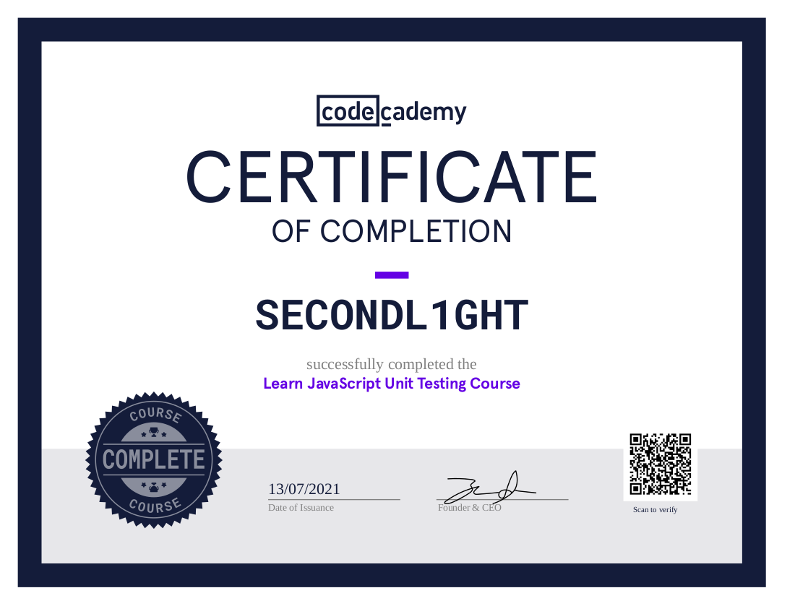

About Me
Hello and thank you for taking the time to look over my portfolio! My name is SECONDL1GHT, I care about privacy and therefore prefer to go by a pseudonym online. :) I currently have a successful career in a totally different field (forestry). However, I am hoping to pursue a new found passion and expand my freedom by becoming a front-end web developer. During the summer of 2020 I discovered bitcoin and it completely changed my life in so many ways. One of which is that it prompted me to give coding a try. After discovering how much I enjoy coding, I now want to contribute to open-source projects and my goal is to work for a bitcoin company full-time. I hope you like what you find on my website. I believe that with the support of experienced developers, I have the drive, mindset and approach to learning required to become a great front-end dev. Joining an exciting team of like-minded individuals that are building the future would be a dream come true. Please feel free to review my code for this website on my GitHub .
Skills
- HTML5
- CSS3
- JavaScript
- React
- Redux
 JSX
JSX- Markdown
- Git
- TDD
- Mocha
- Linux
Future Skills
- Node.js
 TypeScript
TypeScript- Bootstrap
Learning
I am currently enrolled in the Codecademy Front-End Engineer Career Path and I am 55% complete! I will display my learning certificates here as I receive them.

Learn CSS Certificate

Learn Asynchronous JavaScript Certificate

How to Debug JavaScript Errors Certificate

Learn JavaScript Unit Testing Certificate 
Learn Responsive Design Certificate

Learn Navigation Design Certificate

Learn Color Design Certificate

Codecademy Profile
Additional courses that I am enrolled in and plan on completing after my career path are: Learn React Native, Learn React Router, Learn TypeScript, Learn Bootstrap and Learn Node.js. I am also reading books related to web development and following a variety of online resources to stay current on the latest progress in the field.
Projects
Future Block Date
HTML CSS JavaScriptThe idea for this website is to create a simple one page site that you can enter a future bitcoin block height and it will return the estimated date for you. I came up with this idea while wondering to myself what the date will be when the 1,000,000th block gets mined.
Random Reddit
HTML CSS JavaScript React ReduxIn this project I will create a fun website called Random Reddit that has two buttons. You can click either button and they will return a random sub-reddit or post. You can then browse the sub-reddit or post thread that was selected and when you are finished, click the buttons again to find new content.
Bitcoin Recommendations
HTML CSS JavaScriptThis website will be a curated list of bitcoin hardware, software and resources that I have found useful and would like to share. There are many sites already like this but regardless, I think this could be a helpful contribution to the bitcoin community.
Contact
Thank you again for visiting my portfolio, I welcome any feedback or opportunities you may have. If you would like to contact me, please send me a message on Discord @secondl1ght#9164 or by e-mail at secondl1ght@protonmail.com, I would love to hear from you!